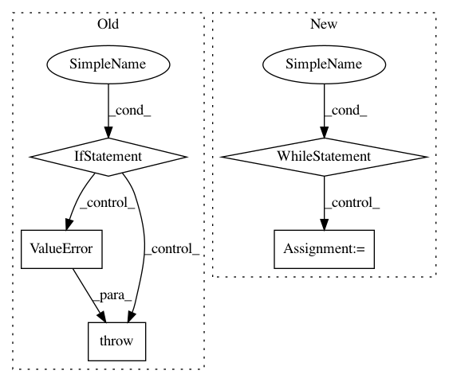

7c7f681931aa62cb8c92657d2af75100507e03d0,pygsp/graphs/stochasticblockmodel.py,StochasticBlockModel,__init__,#StochasticBlockModel#Any#Any#Any#Any#Any#Any#Any#Any#Any#Any#Any#,61
Before Change
self.W = W
if self.is_connected(recompute=True):
break
if nb_iter == n_try - 1:
raise ValueError("The graph could not be connected after {} "
"trials. Increase the connection probability "
"or the number of trials.".format(n_try))
self.info = {"node_com": z, "comm_sizes": np.bincount(z),
"world_rad": np.sqrt(N)}
super(StochasticBlockModel, self).__init__(W=W, **kwargs)
After Change
// Along the lines of np.random.uniform(size=(N, N)) < p.
// Or similar to sparse.random(N, N, p, data_rvs=lambda n: np.ones(n)).
while (n_try is None) or (n_try > 0):
nb_row, nb_col = 0, 0
csr_data, csr_i, csr_j = [], [], []
for _ in range(N**2):
if nb_row != nb_col or self_loops:
if nb_row >= nb_col or directed:
if rs.uniform() < M[z[nb_row], z[nb_col]]:
csr_data.append(1)
csr_i.append(nb_row)
csr_j.append(nb_col)
if nb_row < N-1:
nb_row += 1
else:
nb_row = 0
nb_col += 1
W = sparse.csr_matrix((csr_data, (csr_i, csr_j)), shape=(N, N))
if not directed:
W = utils.symmetrize(W, method="tril")
if not connected:
break
self.W = W
if self.is_connected(recompute=True):
break
if n_try is not None:
n_try -= 1
if connected and n_try == 0:
raise ValueError("The graph could not be connected after {} "
"trials. Increase the connection probability "
"or the number of trials.".format(self.n_try))
In pattern: SUPERPATTERN
Frequency: 4
Non-data size: 5
Instances
Project Name: epfl-lts2/pygsp
Commit Name: 7c7f681931aa62cb8c92657d2af75100507e03d0
Time: 2019-02-25
Author: michael.defferrard@epfl.ch
File Name: pygsp/graphs/stochasticblockmodel.py
Class Name: StochasticBlockModel
Method Name: __init__
Project Name: snipsco/snips-nlu
Commit Name: aae0ba842e293a63d6aaee45553712532054ef79
Time: 2017-04-12
Author: clement.doumouro@snips.ai
File Name: snips_nlu/slot_filler/data_augmentation.py
Class Name:
Method Name: get_noise_iterator
Project Name: keras-team/keras
Commit Name: c25fa38deb4efc5445f64af3ec17eae0eb660d2f
Time: 2017-11-09
Author: francois.chollet@gmail.com
File Name: keras/models.py
Class Name: Sequential
Method Name: add
Project Name: ntucllab/libact
Commit Name: b82f226368d589878d2d4634af5b8a457cd331b7
Time: 2016-03-11
Author: yangarbiter@gmail.com
File Name: libact/labelers/interactive_labeler.py
Class Name: InteractiveLabeler
Method Name: label